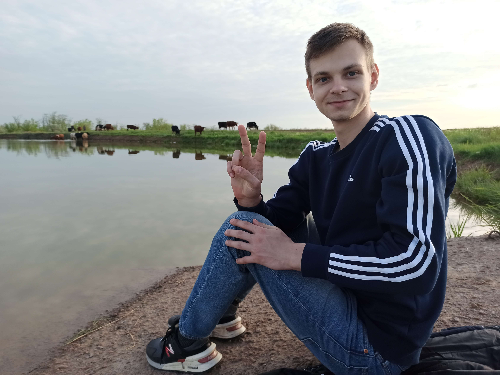
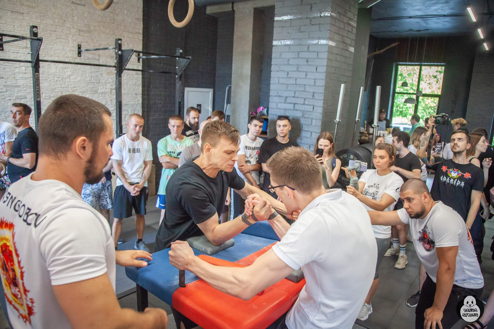
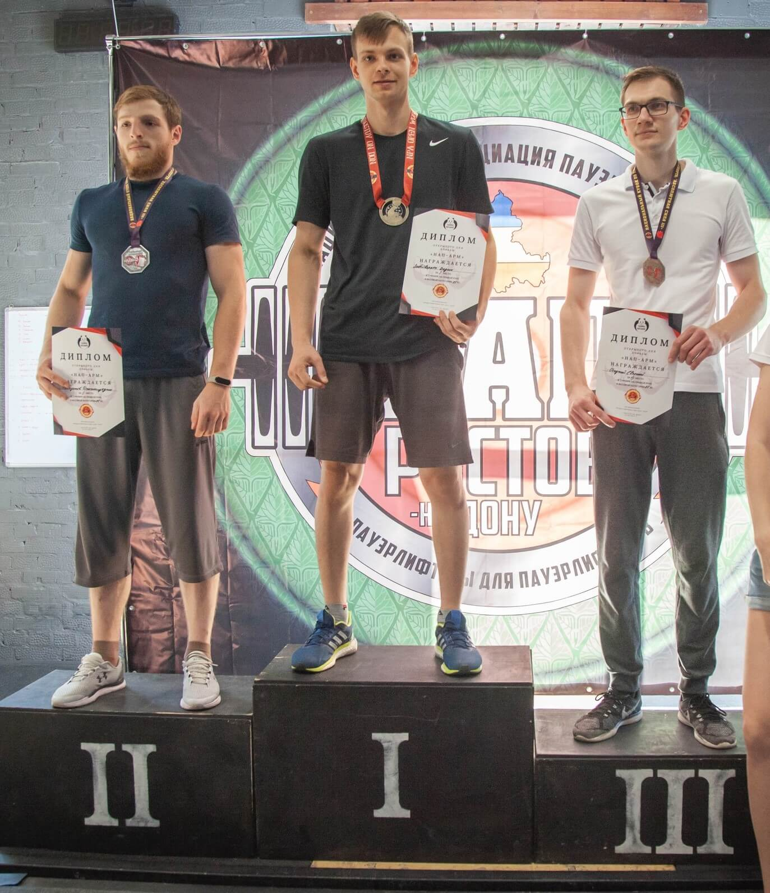
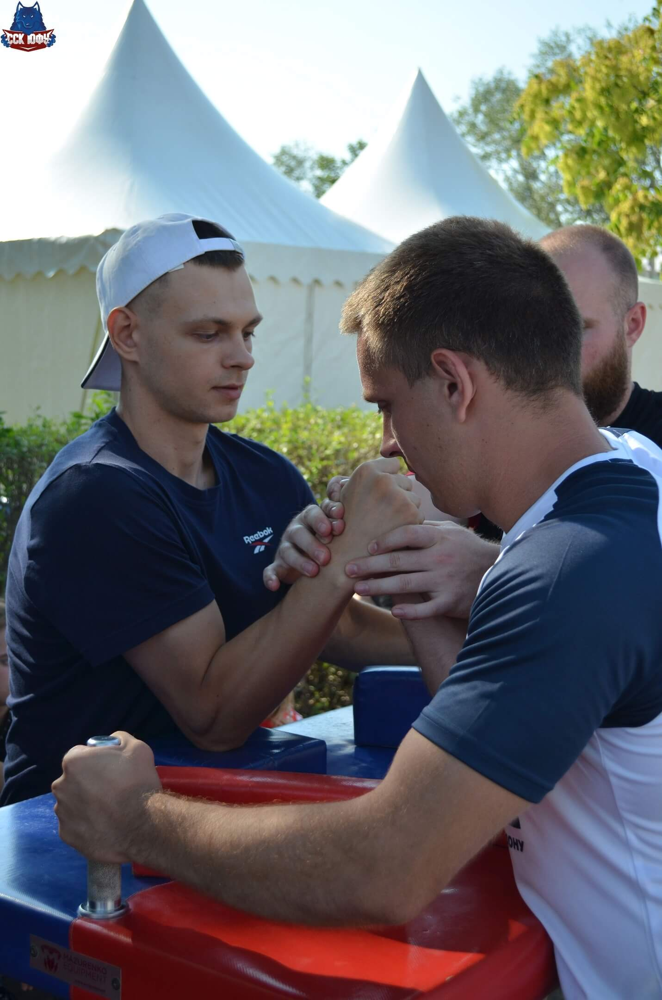
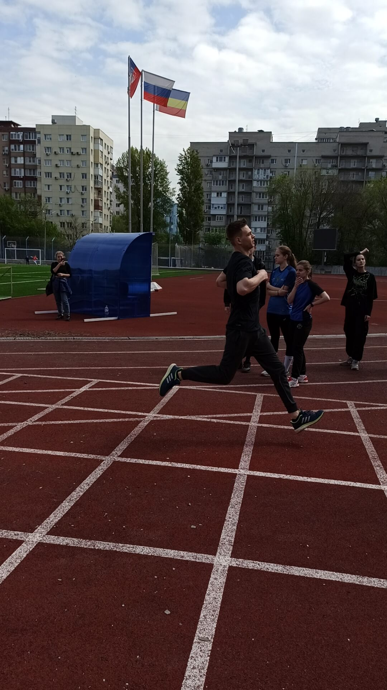
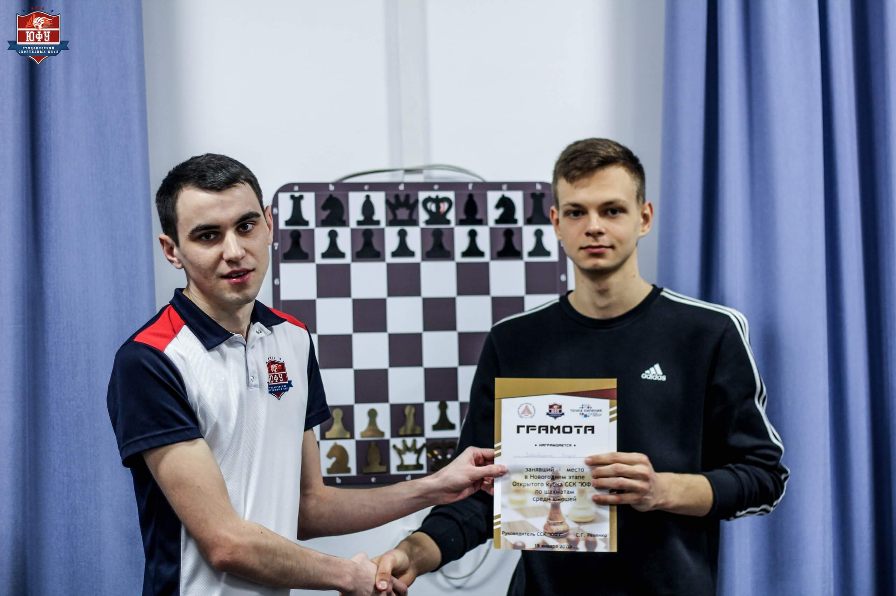

Привет, Я - Вадим.
Родился в г. Городовиковск. С самого детства и по настоящее время занимаюсь спортом. Мой любимый вид спорта – армрестлинг. До сих пор участвую в соревнованиях и занимаю призовые места.
   Также увлекаюсь шахматами и программированием.

Имею два высших образования по следующим специальностям:
1.Бакалавриат:Радиофизика
2.Магистратура: Землеустройство,кадастры
и космический мониторинг Земли.
Люблю решать логические задачки. Но я захотел работать не по специальности, а связать свою работу с увлечением – программированием.